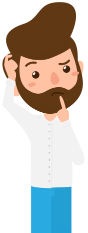
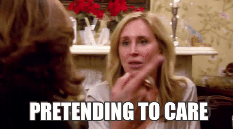

Pablo Monteserín
A continuación, te plantearé una serie de cuestiones sobre las que me gustaría que reflexionases.
¿Cuantas afirmaciones correctas hay abajo?
Aprender a programar es difícil
Aprender a programar es fácil si le dedicas muchas horas
Aprender a programar es cuestión de talento. Hay gente que lo tiene y hay gente que no.
El libro: Outliers. The story of success
relaciona
el éxito en conseguir dominar una
materia con
el tiempo que se le
dedica.
Concretamente cuenta que necesitas 10.000 horas para dominar una materia.
No necesitas dominar la programación para encontrar trabajo de programador, así que vamos a suponer que con 1000 horas de dedicación activa ya tenemos el conocimiento que necesitamos.
1000 horas son:
2 años dedicando 10 horas por semana.
1 año dedicando 20 horas por semana.
Medio año dedicando 40 horas por semana.
Un programador Junior cobra unos 1200€ mensuales. Para ser programador Junior, probablemente necesites unas 1000 horas de dedicación real y concentración plena.
¿Cuánto tiempo vas a necesitar para ganar 1200€ mensuales?. ¿6 meses? ¿1 año? ¿5 años?¿Nunca?
¿Qué ocurriría si para hablar yo dijese una sílaba cada hora?
Si tu proceso de aprendizaje se alarga lo suficiente, nunca conseguirás tu objetivo de aprender lo que te propones
El profesor explica mal
Es mucha materia
Vamos muy rápido
No le estoy dedicando el tiempo suficiente
¿Suponiendo que todas estas afirmaciones son verdad... ¿En cual debería focalizar mi atención?
Tienes una empresa y dos programadores. Uno de los dos es 20 veces más rápido que el otro.
¿Les pagarías lo mismo?
Si no les pagases lo mismo,
¿cuál sería la diferencia de sueldo?

La frustración es el origen de muchísimos traumas del ser humano.
¿Tiene alguna utilidad?

En clase tienes tiempo para meterte en facebook, consultar el correo, mandar muchos
besos con corazones a la pareja, ver vídeos de gatos, de videojuegos, del club de la
comedia, de cartas Magic, de fútbol, de caídas, de accidentes, hacerte selfies...
¿Qué significa esto?

Si sólo entiendes el ejercicio. Todavía no lo sabes hacer.
En el proceso de aprendizaje, en caso necesario, esta bien...
- copiar código de otros ejercicios
- ver la solución
- pedirme ayuda a mí o a tu compañero
Simplemente debes ser consciente de que si has terminado el ejercicio recurriendo a estas ayudas, no lo sabes hacer y tendrás que reintentarlo hasta que puedas hacerlo con autonomía.
Si no intentas volver hacer el ejercicio por tus propios medios, dentro de un mes te darás cuenta de que no tienes ni idea. Pero ya es tarde, no aprenderás a programar en este curso.
No pidas que sea más fácil, pide ser mejor.

Este es Paco.
Paco esta suscrito a Futbol TV y pasa de media 6 horas al día viendo futbol.
Sin embargo, Paco es incapaz de sostener una pelota de futbol en equilibrio sobre la frente.
Este es Marcos.
A Marcos le chifla el cine de acción, especialmente el de artes marciales. Es super fan de Bruce Lee, Jackye Chan, Jet Li.
Sin embargo, es incapaz de golpear con precisión cualquier cosa que esté por encima de su cintura.
Esta es Lucía.
A Lucía le encanta la música. De todos los géneros. Rock, metal, pop, indy... Pasa horas escuchando música mientras trabaja, cocina, pasea...
Sin embargo, no sabe tocar ningún instrumento y nunca ha cantado en un karaoke porque siente que no sabe cantar.
Este es Antonio.
Antonio quiere aprender a programar. Ve muchos videotutoriales de programación, y va copiando lo que dicen en el video en la pantalla de su ordenador. También es capaz de leer el código fuente de una aplicación y entenderlo.
Sin embargo, es incapaz de programar una simple calculadora con Javascript.
¿Qué tienen en común estas 3 personas?
Programar es una habilidad. Las habilidades se entrenan poniéndolas en práctica.
Esa actitud pasiva de aprender cosas nuevas funciona cuando ya tienes la habilidad para ponerlas en práctica.
Cuando sepas programar podrás ver un video tutorial o leer la forma de resolver un problema de programación y ponerlo en práctica directamente.
Igual que si a un cocinero le explican un plato, o a un malabarista le enseñan una combinación de lanzamientos.
Nadie aprendió a escribir viendo videos de gente escribiendo.
¿Cómo NO vas a aprender?
No vas a aprender a programar viendo tutoriales y copiando lo que dicen en tu pantalla. No vas a aprender a programar copiando la solución de una página web en tu ordenador.
¿Cómo SÍ vas a aprender?
La única forma de aprender a programar es comenzar tus ejercicios desde un editor de texto en el que no hay nada y comenzando a escribir desde cero.